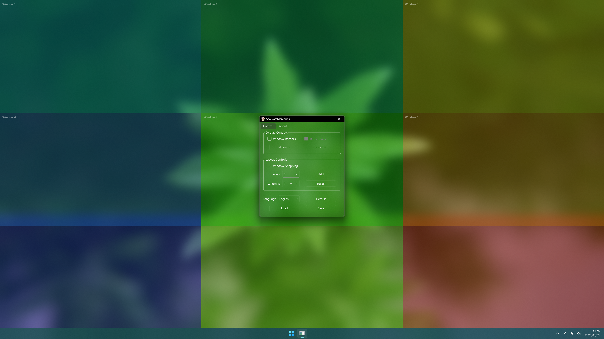
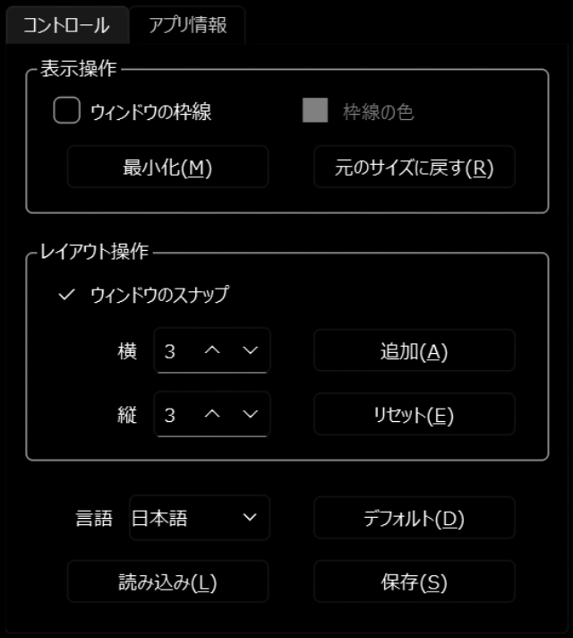
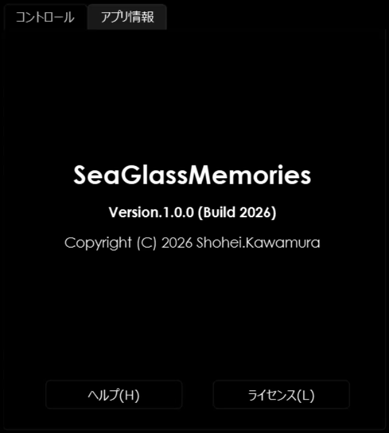
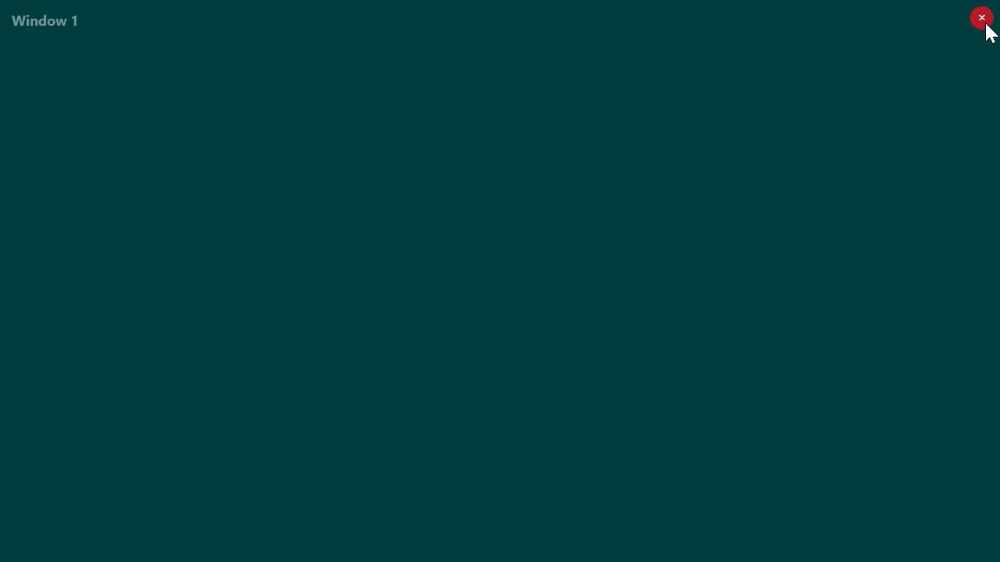
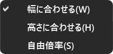

Minimalist Image Viewer for Windows

.png).jpg / .jpeg).bmp).gif).webp)
本アプリのメイン画面の各部名称と役割について説明します。


| タブページ | グループ | 項目名 | ショートカットキー | 説明 |
|---|---|---|---|---|
| コントロール | 表示操作 | ウィンドウの枠線 | － | ウィンドウ枠線の表示・非表示を切り替えます(枠線の太さは固定です)。 |
| 枠線の色 | － | ウィンドウ枠線の色を指定します。 | ||
| 最小化 | Alt + M |
ウィンドウを最小化します。 | ||
| 元のサイズに戻す | Alt + R |
ウィンドウを最小化以前の状態に戻します。 | ||
| レイアウト操作 | ウィンドウのスナップ | － | ウィンドウのスナップ機能の有効/無効を切り替えます。有効にすると、ウィンドウの移動やサイズ変更時に、隣接するウィンドウの辺に吸着するようになります。 | |
| 横 | － | 追加/リセット時のウィンドウの幅を指定します。画面の横幅を指定した数で等分した幅になります。 | ||
| 縦 | － | 追加/リセット時のウィンドウの高さを指定します。画面の高さを指定した数で等分した高さになります。 | ||
| 追加 | Alt + A |
指定されたサイズのウィンドウを1つ追加します。 | ||
| リセット | Alt + E |
指定されたサイズでウィンドウをリセットします。 | ||
| その他 | 言語 | － | 本アプリの表示言語を切り替えます。 | |
| デフォルト | － | すべての設定を初期値に戻します。 | ||
| 読み込み | Alt + L |
保存された設定ファイルを読み込みます。 | ||
| 保存 | Alt + S |
現在の設定をファイルに保存します。 | ||
| アプリ情報 | － | － | － | 本アプリのバージョン、著作権情報を確認できます。 |
| ヘルプ | Alt + H |
ヘルプを確認できます。 | ||
| ライセンス | Alt + L |
ライセンス情報を確認できます。 | ||
ウィンドウの操作方法について説明します。

| 機能 | 操作方法 | 説明 |
|---|---|---|
| 画像ファイルの読み込み | ドラッグ＆ドロップ | サポートされている画像ファイルをウィンドウ内にドロップすると、画像が表示されます。 |
| ウィンドウを閉じる | マウスホバー ＋ 左クリック | ウィンドウ内の右上端にマウスカーソルを合わせると「×」ボタンが表示されます。押すとウィンドウが閉じます。 |
| ウィンドウの移動 | 左クリック ＋ ドラッグ | ウィンドウ内の任意の場所を左クリックしたままドラッグすると、ウィンドウを画面内の自由な位置に移動できます。 |
| ポップアップメニューの表示 | 右クリック | 画像を表示したウィンドウ内で右クリックすると、画像操作用のポップアップメニューが表示されます。 |
ポップアップメニューの項目と、項目が選択されているときの操作方法について説明します。

| 項目名 | 操作方法 | 説明 |
|---|---|---|
| 幅に合わせる | ウィンドウの左右の端をドラッグ | 画像をウィンドウの横幅にフィッティングさせながら拡大・縮小できます。 |
| 高さに合わせる | ウィンドウの上下の端をドラッグ | 画像をウィンドウの高さにフィッティングさせながら拡大・縮小できます。 |
| 自由倍率 | マウスホイール | 画像を自由に拡大・縮小できます。 |
| 右クリック ＋ ドラッグ | 画像の表示位置をウィンドウ内で自由に動かせます。 | |
| 左ダブルクリック | 画像をウィンドウの短辺にフィットするサイズにリセットします。 | |
A. 完全無料(フリーソフト)です。追加の課金要素などもありません。
A. 通常のWindowsアプリと同様に、設定の「インストールされているアプリ」またはスタートメニューからアンインストールできます。
A. Windowsの標準機能でタスクバーを隠すことができます。
- タスクバーの何もないところを右クリックし「タスク バーの設定」を開きます。
- 最下部にある「タスク バーの動作」をクリックします。
- 「タスク バーを自動的に隠す」にチェックを入れれば完了です。
A.
C:\Users\<ユーザー名>\AppData\Local\SeaGlassMemories\settings.jsonに保存されます。
A. 「コントロール」タブページの「デフォルト」ボタンを押した後「保存」ボタンを押して設定を保存するか、設定ファイルを直接削除して本アプリを再起動してください。
A. 以下の3点をご確認ください。
ファイルの形式(拡張子)
本アプリが対応している画像フォーマット(PNG、JPEGなど)かご確認ください。ファイルの場所(保存先)
画像ファイルの保存場所(フォルダ名やファイル名)に、特殊な文字や記号、スペースが含まれていないかご確認ください。アクセス権限
本アプリがそのファイルやフォルダを開く権限を持っているか(セキュリティ設定など)ご確認ください。
本アプリに関する不具合のご報告や機能追加のご要望・ご意見は、以下のメールアドレスにて受け付けております。 本メールアドレスは受付専用のため、個別のご返信やお問い合わせ対応は行っておりません。あらかじめご了承ください。 いただいた内容はありがたく拝見し、今後の機能改善や品質向上の参考にさせていただきます。
メールアドレス : nyarihey@gmail.com
ご報告時のお願い
操作方法や仕様については本ヘルプや「よくある質問(FAQ)」をご確認ください。
不具合報告の際は「動作環境」、「発生手順」、「エラー画面のスクリーンショット」、「設定ファイル」等を添えていただけますと幸いです。
本アプリは、ユーザーの個人情報、閲覧履歴、画像データ、およびデバイス情報を一切収集・送信いたしません。すべての処理および設定ファイルの保存は、お使いの端末ローカル環境内で完結します。
本アプリは個人が開発した完全無料のフリーソフトです。ご利用は、すべてユーザーご自身の責任において行っていただくものとします。
本アプリは「現状有姿」のままで提供されるものであり、動作の完全性、正確性、および特定の目的に対する適合性について、作者は一切の保証をいたしません。
本アプリを使用したこと、または使用できなかったことによって生じた直接的、間接的、偶発的、あるいは特別な損害(データファイルの破損、消失、業務の中断などを含む)について、作者は一切の責任を負いません。
本アプリは、以下のオープンソースライブラリおよびコンポーネントを使用しています。各ライブラリのライセンス詳細および著作権表示については、本アプリ内の「アプリ情報」＞「ライセンス」よりご確認いただけます。